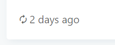

I need a dashboard with several similar reports based on the same query, which differ only in (static) parameters.
The data changes regularly, so the query has a refresh schedule.
In the dashboard I have inserted a visualization with different static parameters several times. This works very well so far and is exactly what I want.
When the dashboard is called, there is always very old data in the graphs (From the time of the last manual refresh). Until someone presses refresh again. Since the dashboard runs unattended on a TV, this is very inconvenient.
The alternative is to simply create the query multiple times without parameters and to write the SQL code accordingly. But then you have to edit x queries when changes occur, which is very annoying and unmanageable.
My wish would be, that when you open a dashboard, it checks, if the cached data is older than the refresh schedule and if so, the query is executed again with these (static) parameters.
Could you create one master query and then create multiple secondary queries using the Query Results data source, filtering the master query using the desired parameters?
This way you only have to update the one master query when changes are needed.
This reply from a couple months ago is quite applicable here too:
Add maxAge to your querystring on the wallboards. Also, for wall displays I’d recommend using the refresh querystring which guarantees the data will update as long as the dashboard is being displayed.
But (after opening url or after hitting F5, not after waiting 30 minutes) it still had the old data:

How do I use the dashboard url parameters correctly?
To keep the database load low, I don’t want to run the query more often than every 30 minutes. But I also don’t want to have data older than 30 minutes when I open the dashboard (which is also the refresh schedule).
Updated: I tried every combination:
maxAge=1800
maxage=1800
maxAge=1
maxage=1
maxAge=0
maxage=0
Can you tell my please the right syntax.
Login or sign up disabled while the site is in read only mode